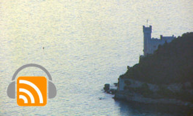

Podcast #3 - The Friuli Venezia Giulia regionMarch 16, 2007 · Media, Places This show is about my region, Friuli Venezia Giulia. I interview Sabina Basile of Pansepol Travel, an agency specializing on local theme tours, including excursions in the nearby Slovenia and Croatia. Listen / Download this episode in MP3 format (8.8Mb - 13 mins) We welcome your feedback and suggestions for future shows. Please write to paolo@tosolini.com.